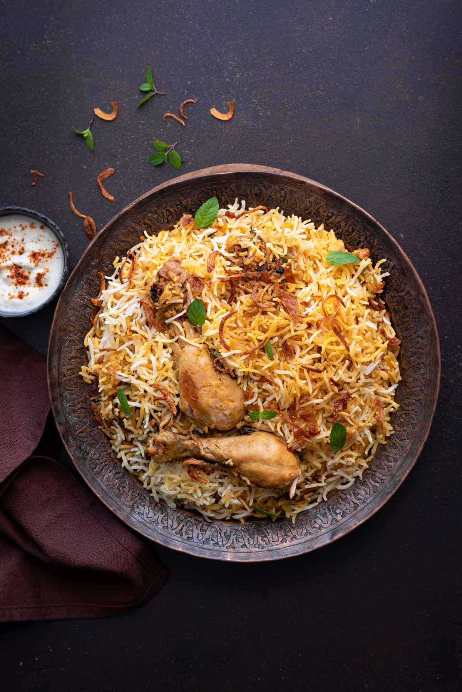

Chicken biryani is a flavorful Indian rice dish made by layering marinated chicken with fragrant basmati rice, aromatic spices, herbs, and fried onions. The ingredients are slow-cooked together until the chicken is tender and the rice is perfectly fluffy and infused with rich, spicy flavors.